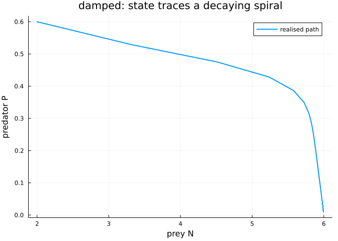

Single-Index Responses
Overview
SingleIndexApproximator is the rank-1 restriction of a multivariate response. Instead of a free surface $g(x_1, x_2)$ it fits
\[g(x_1, x_2) = f(a_1 x_1 + a_2 x_2)\]
— one smooth function $f$ of one linear combination. Both the loadings $a$ and the shape $f$ are estimated. The saving is severe: a $4 \times 4$ tensor surface costs 16 coefficients, while a single index costs 8 outer coefficients plus a direction.
The price is an assumption: that the two drivers act only through one combination. This vignette uses the same predator–prey system as the tensor-smooth vignette so the two can be read side by side, and spends most of its length on the question that decides whether the loadings mean anything — identifiability.
using PartiallySpecifiedModels
using OrdinaryDiffEq
using Plots; default(fmt=:png)
using Random
using LinearAlgebraThe system
a_unit = [0.6, 0.8] # unit-norm truth
a_anch = a_unit ./ a_unit[1] # anchored convention: [1.0, 1.333]
g_true(N, P) = 0.55 * tanh(1.2 * (a_unit[1]*N + a_unit[2]*P) - 0.9)
a_anch2-element Vector{Float64}:
1.0
1.3333333333333335index_loadings returns the anchored convention — the first non-negligible loading scaled to 1 — unless the approximator was built with anchor=nothing, in which case they come back unit-norm. Compare like with like: the truth $[0.6, 0.8]$ is $[1.0, 1.333]$ anchored.
function run_case(eff, mort, tmax, dt; seed=11)
Random.seed!(seed)
f!(du, u, p, t) = begin
N, P = u; graze = g_true(N, P) * P
du[1] = 1.1N * (1 - N / 6.0) - graze
du[2] = eff * graze - mort * P
end
st = solve(ODEProblem(f!, [2.0, 0.6], (0.0, tmax)), Tsit5(); saveat=dt)
Y = hcat([u[1] for u in st.u], [u[2] for u in st.u]) .+ 0.05 .* randn(length(st.t), 2)
dyn!(du, u, p, t) = begin
N, P = u; graze = p.g(N, P) * P
du[1] = 1.1N * (1 - N / 6.0) - graze
du[2] = eff * graze - mort * P
end
prob = PSMProblem(dyn!, [2.0, 0.6], (0.0, tmax),
[SingleIndexApproximator(:g, 2, 8; xi=2.5, initial = z -> 0.2z)];
data_times=collect(st.t), data_values=Y, obs_to_state=[1, 2],
known_params=NamedTuple(), likelihood=Gaussian(), solver=Tsit5())
sol = solve(prob, LAML(maxiters=150, warmup=8, verbose=false))
Ns = [u[1] for u in st.u]; Ps = [u[2] for u in st.u]
mN, mP = sum(Ns)/length(Ns), sum(Ps)/length(Ps)
r = sum((Ns.-mN).*(Ps.-mP)) / sqrt(sum((Ns.-mN).^2)*sum((Ps.-mP).^2))
gh = sol.unknown_functions[:g]
(; st, Y, sol,
cor_np = r,
loadings = index_loadings(prob.approximators[1], sol.parameters.g),
max_err = maximum(abs(gh(N, P) - g_true(N, P)) for (N, P) in zip(Ns, Ps)))
endrun_case (generic function with 1 method)Case 1: a system that settles
damped = run_case(0.45, 0.35, 40.0, 1.00)
(; data_loss = damped.sol.data_loss, edf = damped.sol.edf,
converged = damped.sol.convergence.converged,
cor_NP = damped.cor_np, loadings = damped.loadings,
max_error_on_path = damped.max_err)(data_loss = 0.19756244231873787, edf = 0.0009159625420780426, converged = true, cor_NP = -0.7826352965448188, loadings = [1.0, 3.728100970705223e-16], max_error_on_path = 0.09474982552224837)The fit is excellent: 41 points on two states at noise 0.05 puts the noise floor near $82 \times 0.05^2 = 0.205$, and data_loss sits essentially on it. The recovered function tracks the truth along the path to about 0.09.
The loadings, however, have collapsed to $[1, 0]$ — all weight on prey, none on predator, against a truth of $[1, 1.333]$.
Notice also that the effective dimension is essentially zero: the outer smooth has been penalized back to its null space, i.e. to a straight line in the index. A linear $f$ makes matters worse still, because then only the product of the slope and the loadings is determined — scale can move freely between them.
That is not a solver failure. It is the geometry. The state of an ODE traces a curve through the $(N,P)$ plane, and along a curve where $N$ and $P$ move together ($\mathrm{cor} = -0.78$ here) many different directions produce nearly the same sequence of index values. The data cannot separate them.
plot([u[1] for u in damped.st.u], [u[2] for u in damped.st.u],
lw=2, label="realised path", xlabel="prey N", ylabel="predator P",
title="damped: state traces a decaying spiral")
Case 2: a system that cycles
Sustained cycles trace a loop, so the same prey density recurs at two different predator densities — which is exactly what it takes to tell the directions apart:
cycling = run_case(0.55, 0.22, 60.0, 0.75)
(; data_loss = cycling.sol.data_loss, edf = cycling.sol.edf,
converged = cycling.sol.convergence.converged,
cor_NP = cycling.cor_np, loadings = cycling.loadings,
max_error_on_path = cycling.max_err)(data_loss = 41.679681193047706, edf = 6.157291480074826, converged = true, cor_NP = -0.6707806094506928, loadings = [1.0, 0.8401768498596367], max_error_on_path = 2.56282336728727)The second loading is now clearly non-zero — the direction is being identified. But read the rest of the row before celebrating: the correlation only fell from $-0.78$ to $-0.67$, and on this harder, longer series the fit itself is much worse. The fit converged; it simply converged somewhere poor. Loadings read off a bad fit are not evidence of anything.
What to take from this
- A good fit does not imply interpretable loadings. Case 1 recovers $g$ along the trajectory to 0.09 while reporting a direction that is qualitatively wrong. If you only want the response, that fit is fine. If you want to say “prey density matters more than predator density”, it is not.
- Check the correlation of the index arguments along the realised trajectory before interpreting a direction. It is two lines of code and it is the difference between a claim and an artefact.
- Replicate trajectories from different initial conditions, or genuinely independent drivers, are the real fix; a single trajectory through a correlated state space will not identify a direction however long you run it.
If you need the response but not the direction, and can afford the coefficients, TensorBSplineApproximator makes no rank-1 assumption at all.
References
- Härdle, W., Hall, P. & Ichimura, H. (1993). Optimal smoothing in single-index models. Annals of Statistics 21(1):157–178.
- Yu, Y. & Ruppert, D. (2002). Penalized spline estimation for partially linear single-index models. JASA 97(460):1042–1054.